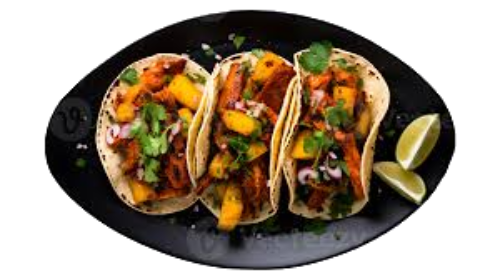
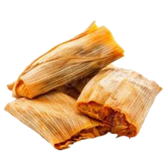

Pico De Gallo

Sopa de Lentejas
Vegan

Non Vegan
Vegan
Non Vegan

Taco

Tamales
Mexican cuisine is a rich and diverse culinary tradition known for its bold flavors, vibrant colors, and deep cultural roots. Influenced by indigenous Mesoamerican ingredients and Spanish colonial cooking, it features staples like corn, beans, chilies, tomatoes, and avocados. Dishes range from street food favorites like tacos al pastor and tamales to complex, slow-cooked meals like mole poblano and barbacoa. Traditionally vegan foods, such as frijoles de la olla, nopales, and esquites, highlight the cuisine’s reliance on fresh, plant-based ingredients. Whether spicy, savory, or sweet, Mexican food is a celebration of tradition, history, and regional diversity.